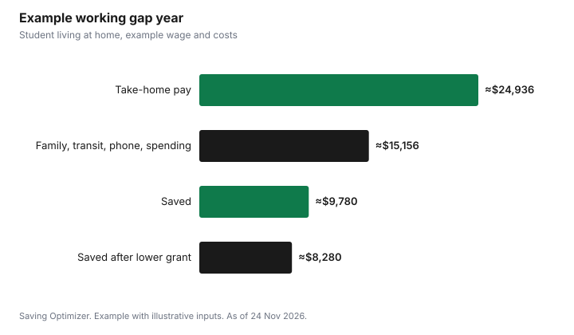

Education · Canada
A Gap Year in Canada: Costs, Aid Effects and Planning

A gap year in Canada can cost a family nothing, or it can cost thousands, depending on what the student does with it. A year of work at home can fund most of first-year tuition, while a year of travel can cost more than a year of school. Before deciding, check three things: whether the university will defer your admission and scholarships, how the RESP waits, and how gap-year earnings will affect student aid the next year.
Key takeaways
- Deferral rules vary by university and program. Some allow one year; others make you reapply. Ask in writing.
- Entrance scholarships often can't be deferred. A deferral can cost the award.
- An RESP can stay open. It must close by the end of its 35th year, so a gap year doesn't put the money at risk.
- Gap-year earnings count as student income when OSAP and other programs assess the next year, which can reduce aid.
- Example: a working gap year can leave a student about $9,780 ahead after living at home and contributing to family costs.
What it costs
The direct cost depends on the plan. A working gap year at home may cost little beyond transit and a phone plan. A volunteer program abroad can cost thousands in program fees and flights. A travel year costs whatever you spend. The hidden cost is time: one year less of full-time earnings after graduation, which matters more in high-paying fields. A gap year that ends with savings and clearer program choice can reduce the bigger cost of switching programs later.
Deferring admission
Some universities let admitted students defer for a year if they ask by a deadline, and some don't defer at all for certain programs. Even where admission defers, entrance scholarships and residence guarantees may not. Before you accept an offer, ask the admissions office: Can I defer? Until when must I ask? Does my scholarship defer? Do I keep my residence guarantee? If the answer is no, you can apply a year later instead, with your final marks already in hand, and pay the application fee again; see OUAC fees.
Effects on aid and RESP
The RESP doesn't have to be used right away. The plan can stay open and keep growing, and it must be closed by the end of its 35th year. Educational assistance payments (EAPs) can be paid while the student is enrolled in a qualifying program, and up to six months after they stop being enrolled. The Canada Education Savings Grant stops after the year the beneficiary turns 17, so a gap year doesn't change grant room. See paying for university without enough RESP savings.
Student aid is where a gap year has an effect. OSAP and other programs look at the student's income from the prior year, so a full year of earnings can reduce grants for the first year of study. That doesn't make working a bad idea, since money earned and saved is still money in hand, but plan on receiving less grant money. Use the provincial aid estimator with your expected gap-year income before you decide.
| Item | What to check | Why it matters |
|---|---|---|
| Admission | Can it be deferred, and by when? | Avoids reapplying |
| Scholarship | Does the entrance award defer? | Can be worth more than the year's earnings |
| Residence | Is the first-year guarantee kept? | Housing costs off campus may be higher |
| RESP | No action needed; plan stays open | EAPs start when studies start |
| Student aid | Estimate with gap-year income | Higher income can reduce grants |
Working
A working gap year is the most money-positive version. A student living at home who works full time can save a large share of their pay. Under the Canada Student Loans Program, savings in a student's bank account may also be considered in the assessment, so ask your aid office how it treats savings versus RESP money. Some students put earnings into a TFSA once they turn 18.
Plan: an example working gap year
An example student works 35 hours a week at an example $17.60 an hour for 46 weeks, lives at home and pays family $300 a month.

Gross pay is about $28,336. After an example $3,400 in tax and payroll deductions, take-home is about $24,936. After $3,600 to family, $2,400 for transit and phone, and $9,156 of spending, the student saves about $9,780. Even if their first-year grant falls by an example $1,500, they start school about $8,280 ahead of where they'd be without the year.
Sources
- Canada Revenue Agency, Registered Education Savings Plans: educational assistance payments (up to six months after ceasing enrolment) and plan termination by the end of the 35th year, checked 24 Nov 2026.
- Employment and Social Development Canada, Canada Education Savings Grant (eligibility through the year the beneficiary turns 17), checked 24 Nov 2026.
- Government of Canada, Student grants and loans for full-time students (income assessment), checked 24 Nov 2026.
Frequently asked questions
Can I defer my university admission for a gap year in Canada?
Some universities allow a one-year deferral if you ask by a deadline; others don't, or only for some programs. Ask the admissions office in writing before you accept.
Will I lose my scholarship if I take a gap year?
Possibly. Entrance scholarships often can't be deferred. Ask the university whether your award will be held for a year.
What happens to an RESP during a gap year?
Nothing changes. The plan can stay open and keep growing; it must be closed by the end of its 35th year. Payments start once the student enrols in a qualifying program.
Does a gap year affect OSAP?
It can. OSAP uses prior-year income, so earnings from a working gap year can reduce grants for the first year of study. Run the estimator with your expected income.
Is a gap year a good financial decision?
A working gap year at home can leave a student thousands of dollars ahead. A travel year costs money and delays full-time earnings by a year.
Researched and drafted with AI assistance and fact-checked against official Canadian sources. How we create content.
Note: Deferral, RESP and aid rules vary. Confirm with your university, RESP provider and student aid office. Education only.